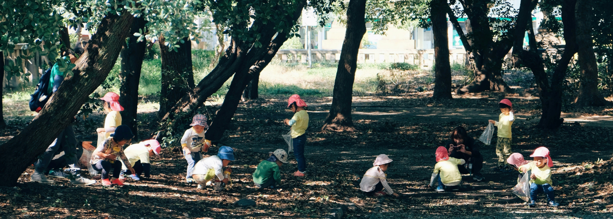
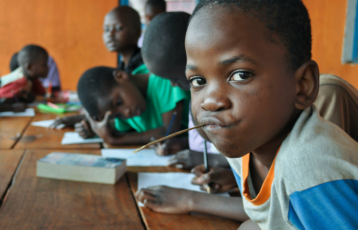
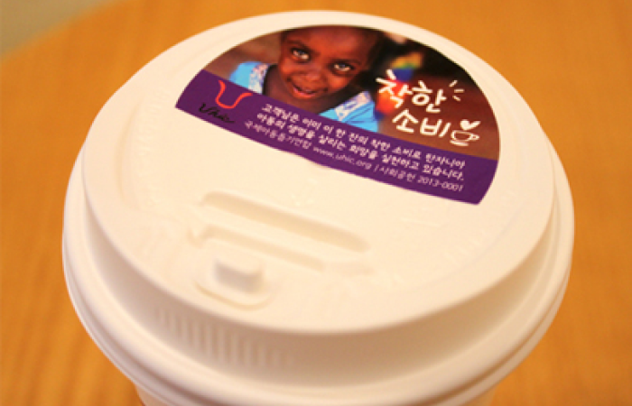

homeHome > 사회공헌 >
글로벌 사회활동
Global Social Activities
글로벌 사회활동
-
플로깅(Plogging)
걸으면서 쓰레기를 줍는 '플로깅(Plogging)' 은 2016년 스웨덴에서 시작된 친환경 달리기로 스웨덴어 이삭을 줍는다(plocka upp) 와 영어 조깅(jogging)의 합성어로 걷거나 길거리의 쓰레기를 줍는 행위로 건강과 환경을 동시에 챙기며 누구나 쉽게 참여할 수 있는 실외 활동으로 최근 큰 인기를 끌고 있습니다.
커핀그루나루는 이번 플로깅 행사를 시작으로 환경보호를 비롯한 기업의 사회적 책임을 다할 수 있도록 사내 문화를 조성해 나갑니다. 직원들과 자원봉사자들의 자발적인 참여로 진행된 이번 플로깅 행사는 국내외 곳곳의 주변 쓰레기를 직접 수거하는 '건강한 사회공헌 활동'을 목표로 추진되어 앞으로도 환경과 사회책임을 비롯한 ESG 요소를 중시하는 문화가 자리 잡을 수 있도록 적극 지원할 것 입니다 -
아프리카 탄자니아 후원
- 아프리카 탄자니아 후원
- 그 동안 커핀그루나루의 후원으로 모여진 사랑을 국제 아동 돕기연합(UHIC)이 활발한 활동을 펼치고 있는 탄자니아 아이들에게 전하고 왔습니다.
앞으로도 어려운 이웃과 함께할 수 있는 다양한 사회공헌 활동을 지속적이며 적극적으로 참여하는 기업이 될 것입니다.
-
커핀그루나루 기부스티커 캠페인
- 커핀그루나루 기부스티커 캠페인
- 그 계획의 일환으로 커핀그루나루는 매월 NGO 단체들과 연계하여
기부스티커 캠페인을 진행합니다. 기부스티커 캠페인이란 커피 한잔에
100원의 착한 기부를 말하는 것으로, 고객이 구입한 커피 한잔에 100원
기부를 통해서 착한 소비와 착한 기부의 중요성을 알리는 캠페인입니다.
매월 “새로운 기업＂과의 협력을 통해 기부스티커 캠페인을 진행합니다.
커핀그루나루의 기부스티커 캠페인을 통해 착한 소비와 착한 나눔의 가치를 키워가도록 하겠습니다.